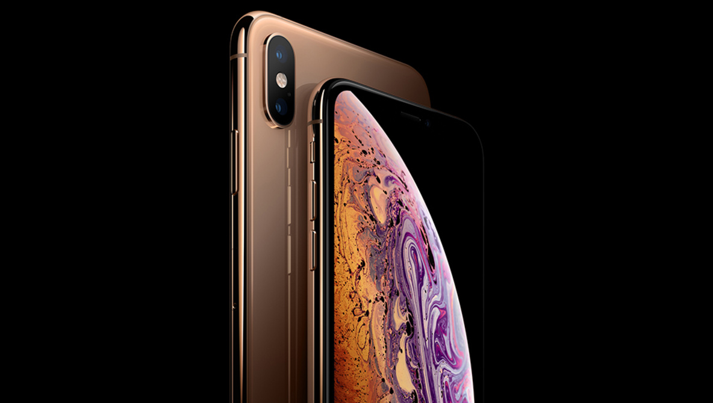
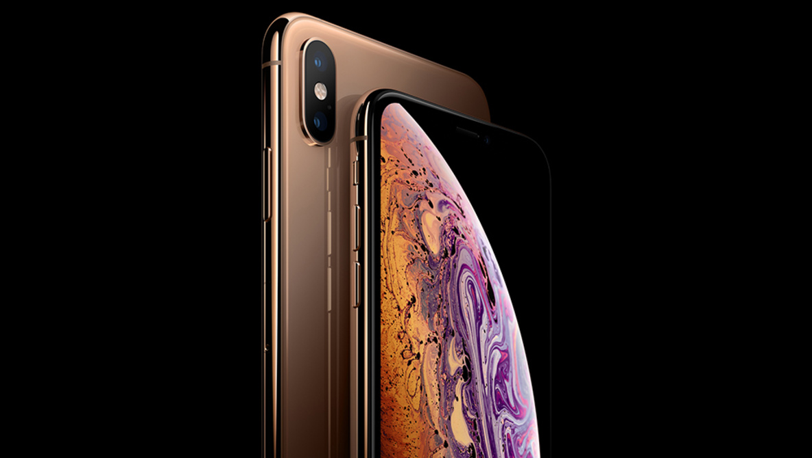

iPhone Xs Max
iPhone Xs Max
6.5" display1
 iPhone Xs
iPhone Xs
5.8" display1
 iPhone Xr
iPhone Xr
6.1" display1
everything you need to know!
iPhone XS has a 5.8-inch OLED display and the iPhone XS Max has a 6.5-inch OLED display, meaning the iPhone Xs Max is larger; however, other than that, there is no difference between the two new phones on the inside.
The iPhone Xs and iPhone XS Max use the new A12 Bionic chip. Both phones have a 6-core CPU and a 4-core GPU, both of which are faster and more powerful than iPhone X from last year.
The CameraThe iPhone XS and iPhone XS Max both come with a dual camera system on the back that consists of an f1.8 12MP wide-angle lens and an f2.4 12MP telephoto lens.
The video capabilities are the same as the last year's iPhone X, meaning you can expect the iPhone XS and iPhone XS Max to have the following video specs:
iPhone Xs Max
6.5" display1
iPhone Xs
5.8" display1
iPhone Xr
6.1" display1
The most durable front glass ever in a smartphone. Precision-machined, aerospace-grade aluminum bands. Water and dust resistance.2 And six stunning new finishes.
The beautiful finishes of the back glass are achieved using an advanced process that allows for deep, rich colors.
A special Apple designed alloy is precision‑machined to create structural bands, and anodized to complement the color of the back glass.
The glass back allows iPhone XR to charge easily and wirelessly.3
You can unlock your iPhone, log in to apps, and pay for things with a glance. It’s the most secure facial authentication ever in a smartphone. And now it’s even faster.
every desicion that goes into iphine makes ir stand apart

 
